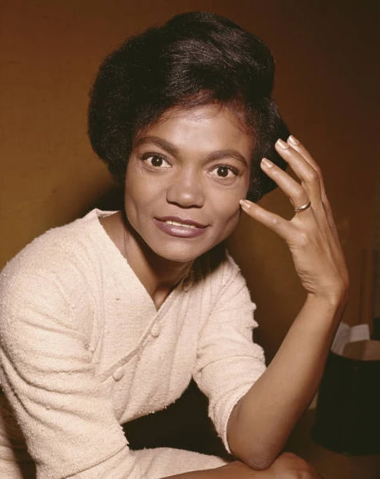

Eartha Kitt
Born: 17 January 1927
Years Active: 1942–2008
Died: 25 December 2008
Age: 81
Genre/s: Vocal jazz, cabaret, dance, Country music, disco
Label/s: RCA Victor, Kapp, MGM, EMI, GNP Crescendo, Decca, Spark, Can't Stop, Ariola, ITM, DRG, Strike Force, His Master's Voice
Eartha Mae Kitt (née Keith; January 17, 1927 – December 25, 2008) was an American singer, songwriter, and actress. She was known for her highly distinctive singing style and her 1953 recordings of "C'est si bon" and the Christmas novelty song "Santa Baby".
Kitt began her career in 1942 and appeared in the 1945 original Broadway theatre production of the musical Carib Song. In the early 1950s, Kitt had six US Top 30 entries, including "Uska Dara" (1953) and "I Want to Be Evil" (1953). Her other recordings include the UK Top 10 song "Under the Bridges of Paris" (1954), "Just an Old Fashioned Girl" (1956) and "Where Is My Man" (1983). Orson Welles once called her the "most exciting woman in the world". Kitt starred as Catwoman in the third and final season of the television series Batman in 1967.
In 1968, Kitt's career in the U.S. deteriorated after she made anti-Vietnam War statements at a White House luncheon with Lady Bird Johnson, the wife of President Lyndon B. Johnson. Ten years later, Kitt made a successful return to Broadway in the 1978 original production of the musical Timbuktu!, for which she received the first of her two Tony Award nominations. Kitt's second was for the 2000 original production of the musical The Wild Party. She wrote three autobiographies.
Kitt found a new generation of fans through her various voice acting roles in the last decade of her life. She was the voice of the villains in two children's movies- Yzma in The Emperor's New Groove franchise and Vexus in My Life As A Teenage Robot, with the former earning her two Daytime Emmy Awards. Kitt posthumously won a third Emmy in 2010 for her guest performance on Wonder Pets!.